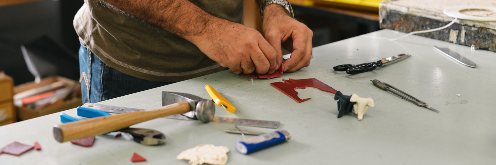
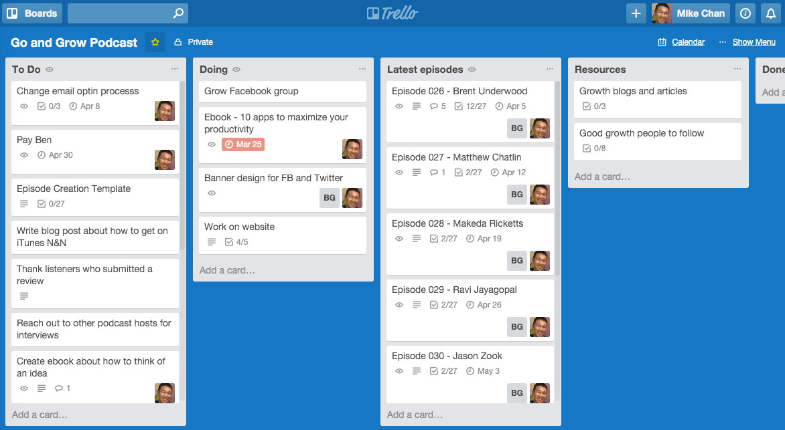
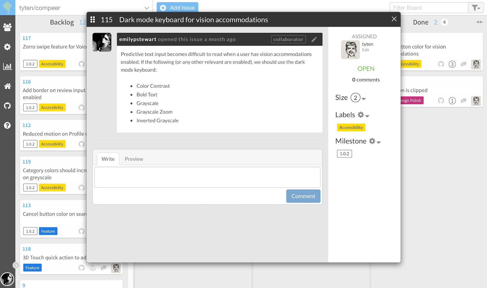
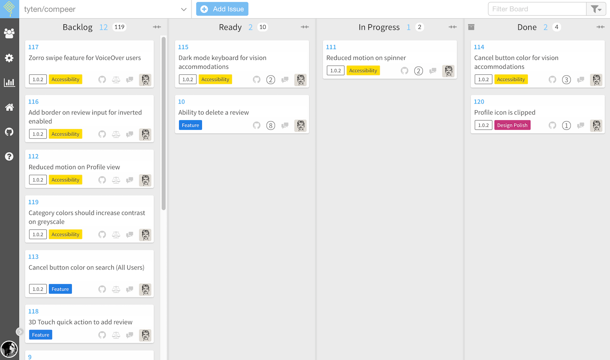
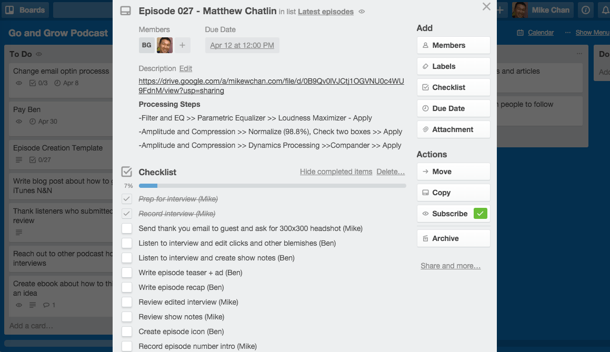

When Mike Chan tried to convince his wife, Vicky, to set up a Trello board for their personal life, she was a bit skeptical at first. “You’re gonna make me sign up for another thing?” she asked.
As CMO of Thorn Technologies and host of the Go and Grow Podcast, Chan was already using kanban project management app Trello to manage his work. He wanted to bring that kind of organization to the rest of his life.
“We were just doing things over text messaging and email,” Chan says. “There wasn’t enough collaboration with those tools, and a lot of our conversations weren’t documented.” Thus, the “Mike and Vicky Life Stuff” Trello board was born.
Project management apps are the default choice for work teams, as they break complex projects down into achievable goals. But you have personal projects, too: redecorating the house, planning a vacation to Bangkok, mapping out a dinner party, or whatever your next adventure is. You don’t stop being productive when we leave work.
To-do list apps can help you tackle those tasks, but a full-featured project management app gives you the flexibility to manage smaller, low-hanging fruit and long-term, multi-layered projects.
Putting everything in one place helps you coordinate your life and accomplish the things that need to get done so you have more time for the passion projects that really matter to you. Here’s how you can start using project management apps for life management.
To-do list apps can be great for checking off simple tasks. When you’re dealing with more complex projects that have a lot of moving parts and require more collaboration, asset storage and reporting, you might want something more robust. Project management apps may be designed for companies with large teams, but they can also work for personal projects—and are often free for a couple projects and collaborators.
Chan was drawn to Trello versus a task management app because of the team-focused features. “The messaging is very helpful if you’re collaborating with a team and need to have that interaction about tasks and projects,” Chan says. “You can link everything to a task and have a conversation within that card in Trello and have a paper trail of everything that you referred to.”

Eddie Park, assistant executive pastor at EvFree Fullerton Church in Fullerton, California, relies on Evernote for both his work and personal life. But when it came to the intern program at his church, he wanted something a little different, so he turned to Trello. Park creates a Trello board for each intern, where he stores paperwork, articles, activities and tasks. He also asks interns to post information about themselves—like their Myers–Briggs personality type and photos of themselves—to help Eddie get to know them as people.
“The Trello boards are a one-stop-shop for each intern I work with,” Park says. “It’s super helpful because it gives me a bird’s-eye view of who this person is and what they’re working on.”
Park then carried Trello over into his personal life, where he now has a board with his wife. They each have a to-do list for tasks and reminders, and also post encouraging notes for one another.
Think about it this way: to-do apps help you tick off day-to-day tasks, but project management apps are about long-term goals. They’re a repository for your research, blueprints, and “someday” ideas. And if you want to pull a coconspirator into your project, PM apps are flexible enough to work for “us” instead of just “me”.
There are a lot of factors to consider when choosing a project management tool, whether it’s just for yourself or a group.
But you main consideration should be finding an app that works for your workflow. A tool that magically cures one team’s organizational woes might end up making you wish you never hit the “sign up” button. That’s ok—every project carries different requirements.
Emily Stewart had to use different apps before she found the right one. To help manage the precious free time she spent building her side-project Compeer—an iOS app that lets people rate the ADA-friendliness of locations—Stewart and her co-creator first used Basecamp.
“It worked well for storing assets, conversations and big ideas for later,” Stewart says. ”You can say, ‘What was that thing we kind of talked about and put on hold?’ and search for it.”
It worked great—until it didn’t. As development progressed, Stewart noticed they weren’t using Basecamp as much as before. “We noticed things that had been done weren’t getting checked off,” she says. “If you find yourself not using something, you might be wasting effort on a tool that isn’t working for you.”
Because they only had nights and weekends to work on the app, they needed a tool that would maximize productivity. What they really needed was something that could better track feature requests and integrate with Github. They tried Pivotal Tracker until a friend suggested Waffle, which they’re currently using.

“When you have a backlog, and you’re trying to move one thing over at a time, having that linear left-to-right visual is really helpful,” Stewart says. “We needed to know status and where something was in the pipeline.”
Chan, who was an Asana user before switching to Trello, says a big consideration for him was the user interface. “I think the first thing to consider is what you’re comfortable looking at,” he says. “There are so many options out there, you can get pretty nitpicky. If one doesn’t feel too good, there’s gonna be something out there you are comfortable with.”
Fiona Silke—a sustainability consultant and co-founder of Loop & Co—most recently tried LiquidPlanner and Trello.
“Most of my projects—for better or worse—have moving deadlines, and most steps in the process are reliant on the previous step to be completed,” she says. “Trello helps me look longer term to map out what needs to be done. I also use Trello to capture tasks that I think of during one phase of the project but that don’t need to be done until another later phase.”
Don’t be afraid to shop around until you find an app that feels right. Working on personal projects should be fun, and your project management tool should reflect that. Don’t force yourself to use an app that’s not up to snuff.
Once you’ve settled on a tool, you’ve got to make sure you’re using it effectively. You likely won’t need all of its features, as your “team” may just be yourself or a handful of people. But you’ll still need a way to effectively manage your tasks and get them completed.
Here are a few tips for getting the most out of your new project management app:

The problem with plain to-do lists is that they don’t give any structure to your tasks. That’s what a project management system offers—it helps you create a workflow to know what you need to work on next.
There are a lot of project management methods to choose from: waterfall, lean, scrum, kanban, and more. Each have their own strengths and weaknesses. (And yeah, they have weird names, but they get real results.)
Stewart and her co-creator decided to use Agile’s scoring method to estimate how much effort tasks will take to complete. “We assign points to features, so we’re able to see that this pull request is worth this many points,” she says. “The point system is helpful because it’s motivating.”
Silke uses color-coding to quickly understand where her projects stand. “Red means urgent, green means completed,” she says. “This helps me and others know where we are all at.”
Park, who follows the Getting Things Done method, likens finding a method or system to eating: “When it comes to dieting, I’ve done Paleo, I’ve done Whole30, I’ve counted macros,” he says. “When I’m doing it, I can go for a little while, like 60 days, and I do really well, but it’s not a long-term solution. You wanna find something that can be a lifestyle.”
Project management apps are all about planning, and mapping out a system before you get started will help you stay on track. You’ll know which tasks are up next—whether it’s mocking up a page or sending out dinner party invites—and which ones are the most time-sensitive.

Creating tasks that are actionable is an important part of any project management system. It’s all about deciding on a direction: you need to pick a point to focus on if you want to nail your target. Define the task clearly, and it will be that much easier to complete.
“When a task is too narrow, it’s hard to see how this one little thing is going to affect other cards later down the road,” Stewart says. “Or if it’s too vague, it can be really hard to get started.”
Waffle’s Agile scoring feature allows Stewart to estimate how big a task is and make work more manageable. “If a card is an 11 or some other high number, you’d say, OK maybe we split that card up so it’s not so big.”
For the Go and Grow Podcast, Chan coordinates production with his production manager through Trello, creating clear, actionable tasks that outline the making of an episode from start to finish. “There are 27 steps to create a podcast,” he says. “We use the checklist and commenting features extensively to make sure we’re on top of the workflow to create an episode. We use cards to come up with the order and make sure everything is in line.”
Integrations can help reduce cognitive workload, allowing you to keep everything in one place rather than separately checking and updating a bunch of apps and tools.
That’s what Silke loves about her LiquidPlanner calendar integrations. “I find that I don’t constantly check to-do lists,” Silke says. “I do, however, check my calendar all the time, so I run my immediate daily life through my calendar.”
Chan saves time by automating repetitive tasks. He uses automation app Zapier to create repeating tasks in Trello, so he doesn’t have to add them manually himself each week.
Zapier Integration:
Stewart uses Waffle’s Github integration to attach code to specific cards or tasks in Waffle. “In Github, you’d say ‘Hey this chunk of code is related to this card,’” she says. “It helps keep things moving along because you don’t have to have as many conversations.”
It’s been a few months, and Trello stuck for Mike Chan and his wife’s personal tasks—and it’s especially handy because Chan and his wife are planning a big move. “We’re organizing everything there, like the things we need to do to rent out our condo and all the documents and the ridiculous amount of paperwork that comes with that,” Chan says.
“It’s been really good. My wife found it was worth signing up for one more thing.”
Whether you’re looking to get on the same page as your spouse or tackle some bucket list items, using a project management app for life management and personal projects can help you avoid feeling overwhelmed or letting things slip through the cracks.
Finding the right tool and using it effectively can help you stay organized, meet your goals faster, and improve communication with the different people you collaborate with.
Enjoy this chapter? Read it online or share it at https://zapier.com/learn/ultimate-guide-to-project-management/personal-project-management-app/.
Written by freelance writer Genevieve Conti.
Image credits: To do image from Breakingpic via Pexels.